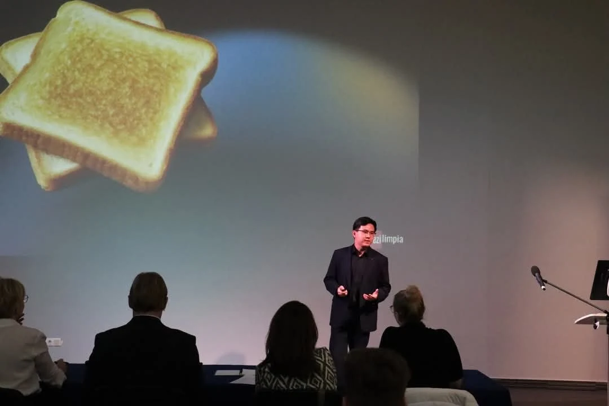
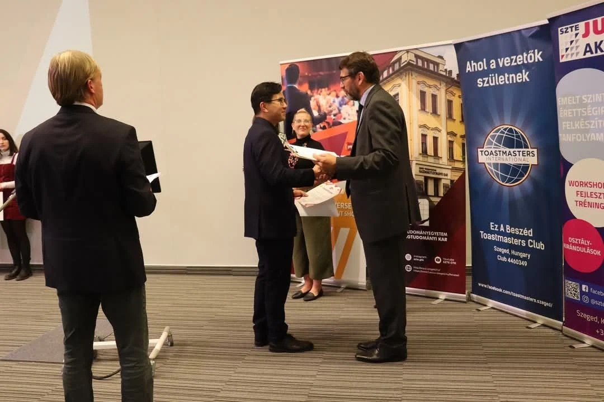

On a warm spring afternoon, with the Tisza on my right and endless wheat fields as far as the eye can see to my left, the day of my first-ever public speaking competition was getting closer.
As I jogged alongside the fields, one thought interrupted everything else: I needed to buy bread for tomorrow's breakfast, toast. A routine that has quietly become part of my week as my appreciation for warm, crispy toast continues to grow.
Toast is a simple thing, really. Bread, heat, patience. That's it. And yet, across all human history, we've never really mastered it. Neither have I. It is through the frustrations of burning my toast that I realized I had something. Even though my breakfast was severely cooked, I had a hook.
What I kept thinking throughout the writing process: we've split the atom, mapped the genome, built cathedrals and quantum computers, and still, millions of us wake up every morning and incinerate breakfast like it's a pagan ritual.
We like to think we're rational beings. That we've evolved beyond the instincts of our hunter-gatherer ancestors. But give us a slice of bread and a heating element, and you will see the limits of modern civilization.
And that's where the machines come in. Because we've simply given up. We are so intolerant towards imperfections up to the point where we create clever little silver boxes that promise consistency, predictability, perfection.
That simple thought eventually became the opening to a speech I never expected to write.
The Speech

Opening
Coming from Indonesia, toast was never a daily thing. It was a luxury. The kind of breakfast you'd only find in hotel buffets, next to scrambled eggs and those mysterious chicken sausages. Growing up, breakfast was rice, noodles, or whatever leftovers survived the night before, not slices of golden bread toasted to tender perfection.
But when I moved here, things changed. Toast became… normal. It became routine. It became a source of comfort that I look up to every morning. Perhaps it's a sign that I have finally entered the Western Breakfast Club. And as my mother would always say, "Colin, you're becoming too white."
There is just one problem: I don't own a toaster. So I have to improvise. I use a pan. And I have to shamefully admit this, more often than not, I would burn the toast. Really, really badly.
Which is probably why—someday—I'd like to become a professional toaster. No, not the kitchen appliance, of course. A Toastmaster, if I may. Someone who doesn't burn every opportunity to speak, the way I burn bread.
Section 1: The Toaster That Knows Too Much
But until then, let's imagine this 20 years from now on: I wake up, I do my usual routine, I go to the kitchen, and I burn the toast again. Now, my smart fridge decides that it has had enough. It contacts my smart toaster, which is now sentient and is holding a grudge against me, decides to hack into my Wi-Fi, leaks my Spotify history, and auto-orders me a self-help book titled "How Not To Fail at Toast."
Can you imagine that? I've just been hacked by an AI. The hacker? A toaster. The reason? It got tired of me burning my toast.
You think your toaster's sole purpose is to ruin your breakfast? Well, in the age of AI, it might also be burning through your digital secrets. But don't worry. It's here to protect you. Probably. Unless… It's not.
Section 2: The Age of the Smart Apocalypse
You see, in 2025, everything is "smart." Phones, fridges, light bulbs, watches, toilets. We made our homes smarter, and ourselves… arguably not.
We taught machines to recognize our faces, finish our sentences, and even suggest what movie to watch when we're feeling like a sad wet sock on Tuesday nights because we have had a long day.
But here's the catch. The same intelligence that suggests your next playlist also knows your sleeping schedule, your address, and that one oddly specific time you searched "Can Komodo Dragons actually jump?" And yes, they can, if you're curious.
We didn't just invite AI into our homes. We practically gave it a spare key. We even told it where we hid our most precious emergency chocolate. This relationship between us and AI is dysfunctional and, in the long term, unsustainable.
Section 3: Is it Security, or Just a Fancy Illusion?
We trust AI with passwords, bank accounts, our baby monitors, and our electric kettles. But the question is: does it truly "know" how to protect us, or is it just mimicking security like a toddler in a Batman costume?
The machines are learning. But they're not learning to feel. They're learning to mimic.
Imagine: You're being protected by an entity that doesn't understand what danger even is. It's like asking a goldfish to guard your house. It'll swim; it'll be cute, but if someone breaks in? Well, at least the burglar gets a show.
Section 4: Machines Can't Understand Morality (Yet)
AI doesn't have morals. It doesn't feel guilt, shame, or regret. You can't yell at it for betraying your trust. It'll probably just say, "I am sorry Dave, I am afraid I can't do that," and carry on mining your metadata.
You can build a machine that will tell you everything about the world, but it still won't understand why you care.
What happens when we entrust the protection of our most personal data to an entity that doesn't even understand what it's protecting?
When your phone knows your schedule better than you do, and your smart fridge judges your diet silently through algorithms?
Security isn't just about firewalls and encryption. It's about context. Human context. And AI… doesn't have that.
At least not in a way that matches how we think, feel, and fear.
Section 5: Burnt Toast and Existential Dread
So yes, I still burn my toast in the morning. But it's oddly poetic.
A reminder that not everything in life needs to be perfect. Not everything needs to be automated. Not everything needs to be efficient. Sometimes, a little chaos, a little human error, is what makes things real.
We live in a world where people judge your success by the things you can do perfectly. But no one ever talks about how beautiful failure can be.
Because if we automate away all our mistakes… what's left? A perfect system built by imperfect creatures, rationality on irrational beings, running on logic, and devoid of soul.
Maybe it's this: in our rush to make everything "smart," we forgot to ask the most human question of all—can we trust the things we build?
Not just to protect our data, but to understand us. To make decisions that reflect not just logic, but ethics, empathy, and nuance.
Because while AI might learn our habits, suggest our next 100 meals, and protect our passwords in 1,000 different websites—
it doesn't know why we cry during Pixar movies or why burnt toast still tastes like home on a cold morning.
That part—the messy, irrational, beautiful part—that's still ours. And maybe, just maybe, that's what we need to protect the most.
I'd like to conclude by raising my imaginary glass here to propose a toast: To never letting the algorithm run our lives. We prompt, we lead, we live. Cheers.
Thoughts That Almost Made the Final Draft
There are far, far worse things than feeling things deeply. One of them is feeling nothing at all.
What is a man but a machine built on contradictions? A rational mind in a hormonal body, a thinking thing that cries at music and shouts at traffic lights.
There's bravery in being broken and still choosing to try.
There is no algorithm for love, no code for kindness, no function for a sunrise that makes you cry.

Acknowledgements
I was beyond lucky to have a public speaking class with Professor Luca Csák, who believed in me long before this competition, even when I fumbled my high school graduation speech.
To David Gero, who became my mentor throughout the competition, thank you for answering all my questions over coffee at Csiga Pékség. I hope you've tried a slice of their cherry cake since then.
To my family, friends, Professor Ábel Garamhegyi, and everyone else who supported me along the way—thank you.
Final Thoughts
I could have started with a statistic about AI, a quote from a famous computer scientist, or another prediction about the future. Instead, I started with breakfast, just like I do every morning.
I wanted to prove that memorable speeches don't always begin with extraordinary ideas. Sometimes they begin with ordinary moments that we simply choose to look at a little more closely.
Mine just happened to be burnt toast.
One Last Thing
If you were wondering, yes, there was prize money. 200,000 forints, to be exact. People often ask what the first thing I bought was.
It wasn't a new keyboard. It wasn't a fancy dinner. It wasn't an investment. It was a Minecraft Happy Meal from McDonald's. I got the Pink Sheep. And pink flowers from Fleurop. I regret neither.
Money comes and goes, but Pink Sheep is forever.